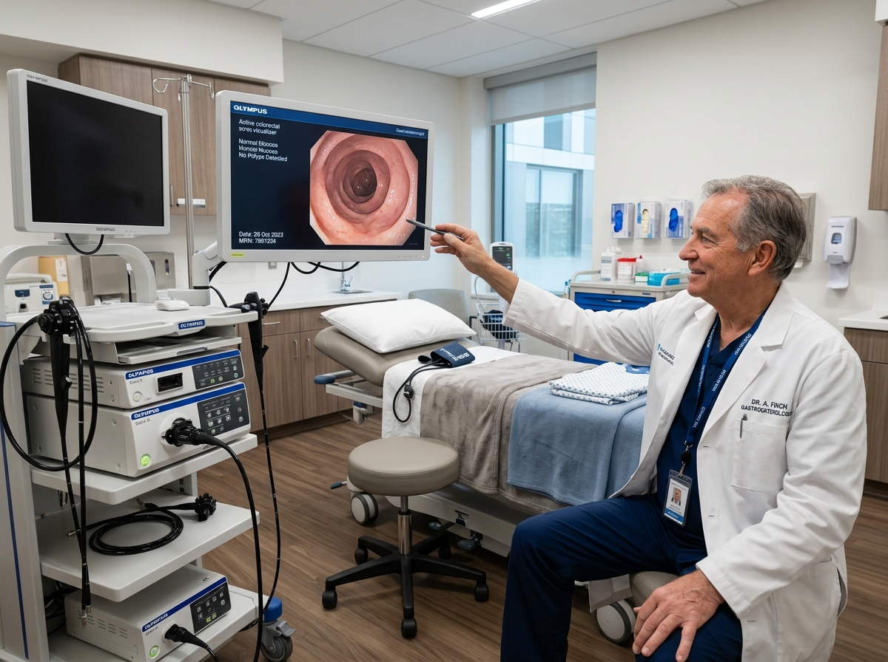
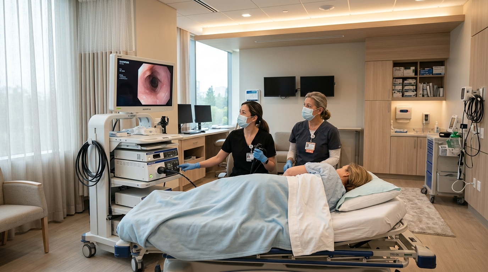

BETTER DIGESTION STARTS WITH BETTER CARE.
Specialized gastroenterology evaluations, high-definition gentle endoscopy, and evidence-based personalized gut health programs. Experience world-class clinical precision with a calmer, more compassionate bedside manner.
14,200+
Procedures Conducted99.4%
Patient Comfort Rate6 Board Leads
GI Specialist FacultyCOMPLETE CARE FOR YOUR DIGESTIVE HEALTH.
From routine screenings to complex therapeutic interventions, our clinic delivers individualized gastrointestinal solutions centered on comfort, precision, and lasting symptom resolution.
Gastroenterology Consultation
Comprehensive clinical evaluations for abdominal pain, irregular motility, chronic digestive symptoms, and personalized care.

Upper Endoscopy (EGD)
High-definition visualization of esophagus, stomach, and duodenum with gentle mucosal imaging and conscious sedation.

Colonoscopy Screening
Advanced preventative screening and polyp detection using high-resolution endoscopy in an ultra-sterile, comfortable environment.
DESIGNED FOR SAFETY, PRIVACY & GENTLE CARE.
Our surgical endoscopy suites are outfitted with the highest clinical standards in hospital-grade air filtration, private prep suites, and advanced video endoscopy platforms.



FROM SYMPTOMS TO ANSWERS.
We remove the guesswork from gastrointestinal diagnosis through an orderly, transparent four-step care journey designed for your comfort and clarity.
Consultation & Intake
Thorough medical history review, dietary triggers analysis, detailed symptom timeline mapping, and focused physical examination.
Targeted Diagnostics
High-definition endoscopy, non-invasive breath tests, or precise stool calprotectin profiling to identify the underlying cause.
Personalized Care Plan
Collaborative treatment regimen including targeted therapeutics, clinical low-FODMAP dietary plans, and lifestyle alignment.
Long-Term Follow-Up
Continuous patient portal monitoring, scheduled telehealth check-ins, routine surveillance, and lasting gut health maintenance.
MEET OUR GASTROENTEROLOGY TEAM.
Compassionate clinical leaders dedicated to personalized digestive health outcomes.
Dr. Maya Carter, MD, FACG
Specializes in high-definition diagnostic endoscopy, Barrett's esophagus surveillance, and complex mucosal imaging.

Dr. Julian Vance, MD, PhD
Expertise in screening colonoscopy, fatty liver disease, non-invasive liver elastography, and polyp resection.

Dr. Sophia Chen, MD
Focuses on visceral hypersensitivity, hydrogen breath analysis, SIBO, and gut-brain neuromodulation.
GUT HEALTH & MOTILITY RISK CHECKER
Answer 3 brief clinical questions to receive an immediate personalized digestive health summary and next-step recommendation.
Assessment Result Title
Recommendation details will appear here based on your score.
REAL PATIENT STORIES OF COMFORT & RECOVERY.
Hear from individuals who transformed their digestive wellness with our compassionate team.
“I had dreaded my screening colonoscopy for years due to previous anxiety. Dr. Carter and her nursing team made the experience completely painless and calming. I fell asleep gently and woke up feeling completely fine.”

Sarah Jenkins
Screening Colonoscopy Patient“After four years of severe IBS and unhelpful advice, Dr. Sophia Chen identified my SIBO through lactulose testing. The tailored dietary plan and motility therapy gave me my normal life back.”

David Marcus
IBS Motility Clinic Patient“The patient portal is an absolute gamechanger. I could track my endoscopy results within 48 hours and message the care team directly. GastroCare is how modern healthcare should be run.”

Elena Vasquez
Upper Endoscopy (EGD) PatientSCHEDULE YOUR CONSULTATION TODAY.
Prompt appointments, respectful bedside care, and advanced digestive diagnostics. Our Bellevue medical pavilion is accepting new adult patients.